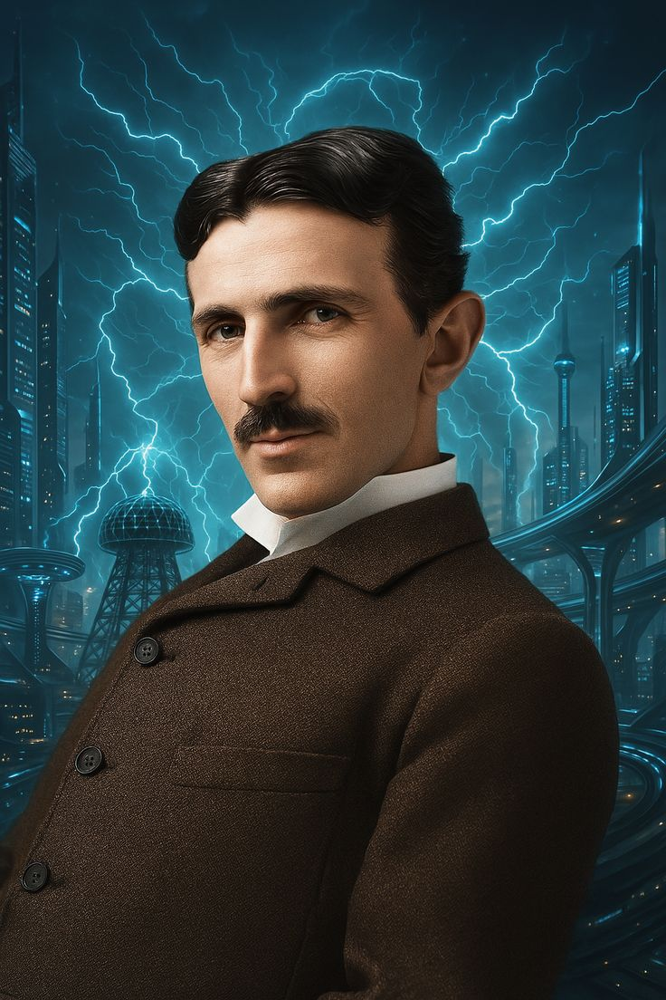
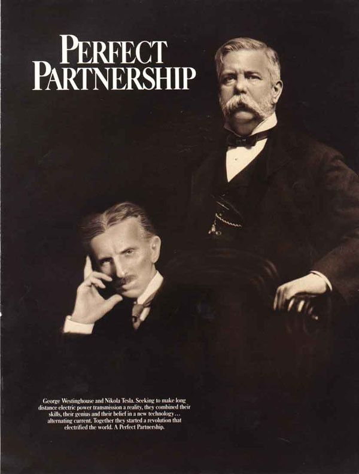
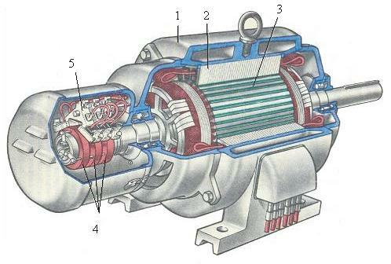

Нікола Тесла
Портрет у лабораторії
Портрет у лабораторії
людина, яка навчила електрику працювати на майбутнє.
«Якби ваша ненависть могла бути перетворена на електрику, це висвітлило б увесь світ.»
— Нікола Тесла
Нікола Тесла — справжній геній, чиї винаходи назавжди змінили хід історії. Його ідеї набагато випередили свій час, тому Теслі приписували найрізноманітніші властивості. Доходило навіть до звинувачень у чаклунстві! На щастя, часи, коли подібні звинувачення були приводом для спалення на багатті, на той момент уже минули. Проте численні загадки, пов'язані з Теслою, досі хвилюють розуми багатьох людей.
Видатний винахідник та інженер, яким Ніколу Теслу вважають зараз, свого часу був звичайним хлопчиком, молодшим сином у родині сербів. На нього не покладали особливих надій, але доля розпорядилася по-своєму: старший брат Ніколи трагічно загинув. Тепер молодший син мав не розчарувати свого батька, і Нікола з острахом думав про те, що йому уготована доля священика.
Ключові розробки винахідника та його головні ділові союзи:



| Рік | Нагорода / Подія | Країна / Організація |
|---|---|---|
| 1892 | Великий офіцер ордена Святого Сави | Сербія |
| 1895 | Великий хрест ордена князя Данила I | Чорногорія |
| 1915 | Чутки про Нобелівську премію з фізики (разом із Т. Едісоном) — не нагороджено | Reuters / Стокгольм |
| 1917 | Медаль Едісона від AIEE | США |
| 1926 | Великий хрест ордена Святого Сави | Югославія |
| 1931 | Хрест ордена Югославської корони | |
| 1934 | Медаль Джона Скотта | Інститут Франкліна, США |
| 1937 | Великий хрест ордена Білого лева | Чехословаччина |
| Медаль Паризького університету | Франція | |
| 1939 | Медаль Софійського університету імені Св. Климента Охридського | Болгарія |
| Загальна кількість офіційних нагород: | 9 відзнак | |